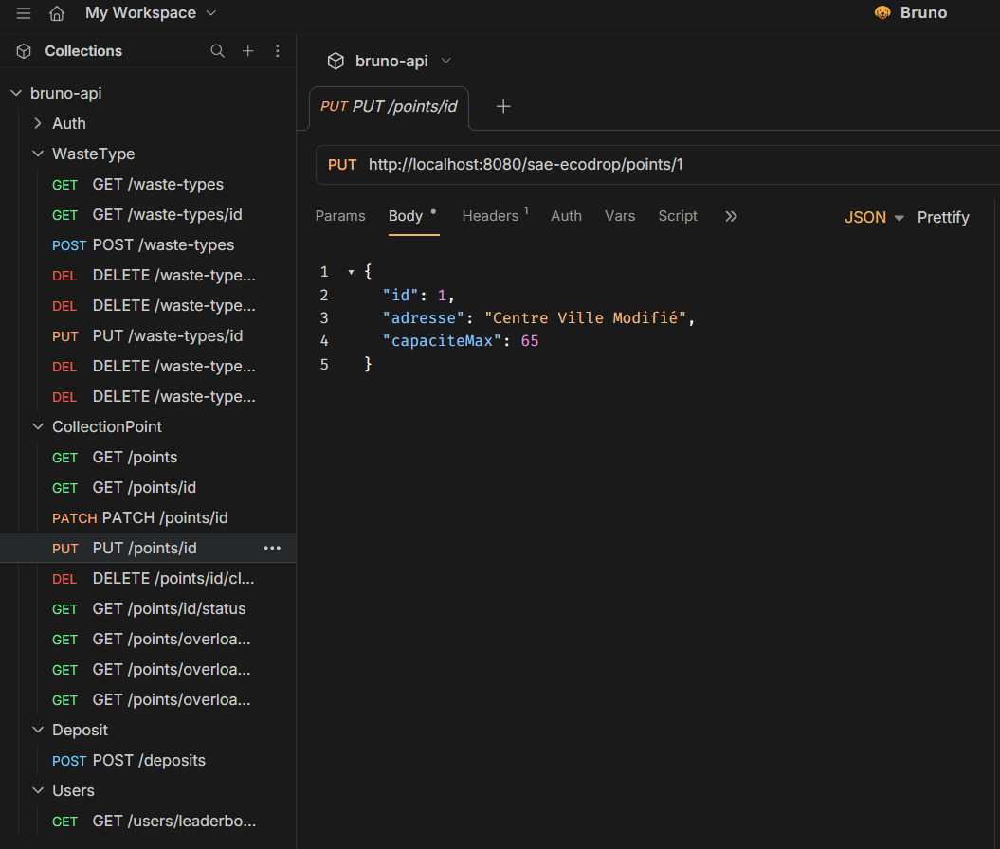
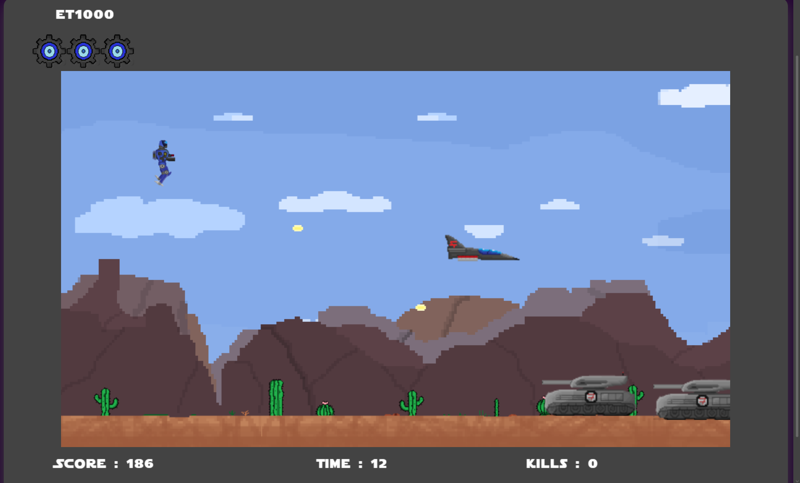
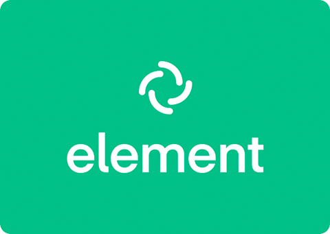

.jpg)
Parcours
BUT Informatique — Université de Lille (2023–2026)
Formation centrée sur le développement logiciel, l'algorithmique, la programmation orientée objet, l'administration systèmes et réseaux, la gestion de bases de données et la conduite de projet.
Réalisation de nombreux projets pratiques détaillés dans les sections ci-dessous (développement web, applications Java, bases de données, modélisation, robotique, et plus).
Lycée La Salle Lille
Baccalauréat Général — Mention Bien
Spécialités : Mathématiques & Numérique et Sciences Informatiques (NSI)
Expérience
Stage de 2ᵉ année BUT Informatique — EKEEP IT (Mai 2026 – Juillet 2026)
Actuellement en stage chez EKEEP IT, je participe au développement d'applications web dans un environnement professionnel utilisant une méthodologie agile. Ce stage me permet de découvrir concrètement le fonctionnement d'une équipe de développement ainsi que les différentes étapes d'un projet logiciel en entreprise.
Stage de seconde — 3Axes Institut (2022)
Découverte des métiers de l'informatique et du jeu vidéo. Initiation aux outils de création numérique (Photoshop, Blender) et observation des workflows de production graphique et 3D.
Stage de 3ème — Institut d'Éducation Motrice Jules Ferry (2021)
Participation à l'accompagnement d'enfants en situation de handicap moteur avec troubles neuro-développementaux. Observation de séances de rééducation (orthophonie, ergothérapie, kinésithérapie, équithérapie). Découverte d'un environnement pluridisciplinaire centré sur l'accompagnement humain.
Compétences
Développement
- Java (POO, JavaFX, fichiers CSV)
- HTML / CSS
- SQL (requêtes et modélisation)
- Bases de l'algorithmique (optimisation, graphes…)
- JavaScript (TypeScript, React, Node.js)
- Unity (C#)
- API REST
Systèmes & Outils
- Linux / Debian — Administration système, VM
- VirtualBox
- Terminal & Shell scripting
- Docker
Gestion de projet & Communication
- Git / GitHub / GitLab
- Travail en équipe
- Rédaction technique
- Organisation et suivi de projet
- Méthode agile (Scrum)
Mes projets
Semestre 4
SAÉ S4.A02.1 — API REST (EcoDrop)
Conception et développement d'une API REST complète en Java EE pour la gestion de collecte de déchets.

Contexte du projet
Projet réalisé en groupe de 3 étudiants dans le cadre du Semestre 4 du BUT Informatique. L'objectif était de concevoir une API REST complète en Java EE permettant de gérer un système de collecte de déchets spécifiques (batteries, textiles, électronique).
Objectifs
Développer un backend fonctionnel permettant de gérer un catalogue de types de déchets, des points de collecte et les dépôts réalisés par les utilisateurs. L'API devait respecter les standards HTTP, supporter les formats JSON et XML, et intégrer une logique métier complète (remplissage des points, leaderboard, validation des dépôts).
Mon rôle
J'ai pris en charge le développement d'une des tables principales de la base de données avec ses endpoints associés (CRUD complet, gestion des codes HTTP, filtres). J'ai également rédigé l'intégralité de la documentation technique de l'API en Markdown (description des routes, paramètres, codes de retour, exemples), et développé l'outil d'import CSV permettant d'alimenter la base de données à partir de fichiers plats.
Résultats obtenus
- API fonctionnelle avec authentification par token et gestion des rôles USER / ADMIN
- Couverture complète des endpoints via des tests automatisés avec Bruno
- Documentation Markdown claire et structurée, réutilisable par d'autres développeurs
- Outil d'import CSV opérationnel, testé sur des jeux de données réels
Compétences techniques développées
- Développement d'API REST en Java EE (JAX-RS)
- Gestion des requêtes HTTP (GET, POST, PUT, PATCH, DELETE) et des codes de retour
- Conception de bases de données relationnelles et requêtes SQL (PostgreSQL)
- Architecture logicielle en couches (DAO, DTO)
- Sérialisation multi-format (JSON / XML)
- Sécurisation par token et gestion des rôles utilisateurs
- Tests d'API avec Bruno et scénarios automatisés
- Import de données via fichiers CSV en Java
Compétences transversales (soft skills)
- Travail en équipe : Nous nous sommes réparti le travail par table de base de données, ce qui nous a permis d'avancer en parallèle sans conflit. Une revue de code collective en fin de sprint a permis d'harmoniser les pratiques.
- Rigueur et respect des standards : J'ai veillé à ce que chaque endpoint respecte les conventions REST (codes HTTP appropriés, nommage des routes), en m'appuyant sur la documentation officielle JAX-RS.
- Gestion du temps : Nous avons sous-estimé la complexité de la gestion de la sécurité et nous avons dû réorganiser les priorités en cours de projet pour respecter la deadline. Cela m'a appris à mieux anticiper les tâches à risque.
- Rédaction technique : La rédaction de la documentation m'a obligé à adopter un point de vue « utilisateur de l'API », ce qui a amélioré la qualité globale du travail.
Difficultés rencontrées
- La gestion de la sécurité (tokens, rôles) s'est révélée plus complexe que prévu et a nécessité plusieurs refactorisations.
- La deadline a été sous-estimée, ce qui a créé une pression en fin de projet.
Améliorations possibles
- Mettre en place davantage de tests Bruno couvrant les scénarios d'erreur
- Mieux planifier les tâches à risque dès le début du projet
SAÉ S4 — Jeu multijoueur (Shoot Them Up)
Développement d'un jeu en ligne multijoueur en JavaScript avec architecture client-serveur en WebSocket.

Contexte du projet
Projet réalisé en groupe de 4 étudiants dans le cadre du Semestre 4. L'objectif était de concevoir et développer un jeu en ligne multijoueur de type "shoot them up" reposant sur une architecture client-serveur Node.js / Socket.io.
Objectifs
Créer un jeu jouable en temps réel avec gestion des collisions, des ennemis, des bonus, un tableau des scores et un mode coopératif. Le jeu devait fonctionner de façon fluide pour plusieurs joueurs simultanés.
Mon rôle
J'ai travaillé principalement sur la partie front-end (client) : mise en place de la SPA et du système de routage côté client, conception des sprites du jeu (personnages, ennemis, décors) et implémentation de leur affichage dynamique sur le canvas HTML5. J'ai également contribué à la logique d'animation et au rendu graphique général.
Résultats obtenus
- Jeu fonctionnel en multijoueur temps réel avec synchronisation des positions
- Système de score, tableau des meilleurs joueurs et écran de fin avec statistiques
- Boss avec intelligence artificielle et apparition progressive des ennemis
- Assets graphiques originaux réalisés intégralement par l'équipe
Compétences techniques développées
- Développement JavaScript front-end et back-end
- Programmation temps réel avec WebSocket (Socket.io)
- Manipulation du Canvas API pour le rendu graphique 2D
- Architecture client-serveur et synchronisation multijoueur
- Gestion des collisions (hitbox) et des interactions
- Implémentation d'intelligence artificielle (ennemis, boss)
- Routing SPA côté client
Compétences transversales (soft skills)
- Résolution de problèmes : La synchronisation des joueurs en temps réel était le défi principal. En analysant les désynchronisations d'états entre clients, j'ai contribué à mettre en place une réconciliation d'état côté serveur qui a stabilisé le jeu.
- Créativité : Tous les assets graphiques étant réalisés par l'équipe, j'ai dû concevoir des sprites cohérents avec l'univers du jeu tout en restant efficace en termes de pixels affichés sur canvas.
- Adaptabilité : Face aux difficultés de synchronisation multijoueur, l'équipe a dû refactoriser une partie de la logique de rendu en cours de développement.
- Organisation : Utilisation d'un système d'issues et d'un kanban GitLab pour coordonner les développements en parallèle.
Difficultés rencontrées
- Synchronisation fiable des états entre plusieurs clients en temps réel
- Détection des collisions et équilibrage de la difficulté du gameplay
- Refactorisation du code pour améliorer la maintenabilité
Améliorations possibles
- Ajout de sons et de musiques immersives
- Amélioration de l'intelligence artificielle des ennemis
- Développement d'une version mobile
Semestre 3
SAÉ 3.02 — Labyrinthes
Développement d'un jeu de labyrinthe en Java avec modes libre et progression.

Contexte du projet
Projet réalisé en groupe de 4 étudiants dans le cadre du Semestre 3. Il consistait à développer un jeu de labyrinthe en Java proposant deux modes : le Mode Libre (taille et densité de murs configurables) et le Mode Progression (difficulté croissante avec défis spécifiques).
Objectifs
Implémenter des labyrinthes aléatoires et parfaits grâce à des algorithmes (DFS, BFS), garantir l'accessibilité des cases et développer une interface graphique JavaFX complète avec boutique de bonus.
Mon rôle
J'ai eu trois responsabilités principales : la rédaction de la documentation technique du projet, le développement de l' algorithme de génération aléatoire du Mode Libre (génération d'un labyrinthe jouable avec pourcentage de murs paramétrable), et la mise en place de la boutique permettant au joueur d'acheter des bonus avec des points gagnés en jeu.
Résultats obtenus
- Jeu complet avec deux modes fonctionnels et interface JavaFX soignée
- Algorithme de génération garantissant l'accessibilité de toutes les cases
- Boutique opérationnelle avec plusieurs bonus (révéler le chemin, téléportation…)
- Thème visuel Bob l'Éponge ajouté pour enrichir l'expérience utilisateur
Compétences techniques développées
- Programmation Java orientée objet et JavaFX
- Conception et implémentation d'algorithmes (DFS, BFS pour parcours et génération)
- Structuration de données (grilles, cellules, graphes)
- Lecture/écriture de fichiers CSV pour le suivi des scores
- Tests unitaires et validation fonctionnelle
Compétences transversales (soft skills)
- Organisation : La répartition claire des modules (génération, interface, boutique, documentation) nous a permis de travailler en parallèle sans blocages. Un point quotidien en début de séance synchronisait l'avancement.
- Communication : La rédaction de la documentation m'a amené à décrire précisément les choix techniques pour que l'équipe puisse reprendre chaque module sans ambiguïté.
- Résolution de problèmes : L'algorithme de génération du Mode Libre produisait initialement des labyrinthes avec des zones inaccessibles. J'ai corrigé cela en intégrant une vérification BFS après génération.
SAÉ 3.03 — Déploiement d'application (Matrix)
Mise en place d'une infrastructure complète de communication basée sur le protocole Matrix.

Contexte du projet
Projet réalisé en groupe de 3 étudiants dans le cadre du Semestre 3. Il consistait à déployer une infrastructure complète basée sur le protocole Matrix, incluant un serveur Synapse, une base de données PostgreSQL et une interface web Element, entièrement en ligne de commande sur des machines virtuelles Linux.
Mon rôle
J'ai été principalement responsable de l'installation et de la
configuration du serveur Synapse : génération du fichier de
configuration, liaison avec la base PostgreSQL, paramétrage des ports et
vérification des logs de démarrage via journalctl. J'ai également
contribué à la mise en place du reverse proxy Nginx.
Résultats obtenus
- Infrastructure Matrix entièrement fonctionnelle (Synapse + PostgreSQL + Element)
- Accès à distance sécurisé via SSH et reverse proxy Nginx opérationnel
- Communication chiffrée entre plusieurs comptes Matrix de test
- Documentation technique rédigée en Markdown pour reproduire l'installation
Compétences techniques développées
- Administration système Linux (services, logs, utilisateurs, permissions)
- Déploiement et configuration de services (Synapse, PostgreSQL, Nginx)
- Gestion de machines virtuelles et accès distant via SSH
- Configuration réseau (IP statiques, DNS, segmentation)
- Utilisation de
systemctletjournalctl - Mise en place d'un reverse proxy et sécurisation des communications
Compétences transversales (soft skills)
- Autonomie : L'absence d'interface graphique nous a obligés à tout réaliser en ligne de commande. J'ai dû rechercher la documentation officielle de Synapse pour résoudre des erreurs de configuration inédites.
- Rigueur : Un fichier de configuration Synapse mal indenté suffit à empêcher le démarrage du service. Cette expérience m'a appris à valider systématiquement la syntaxe avant de redémarrer un service.
- Communication technique : La rédaction d'une documentation claire était essentielle pour que l'équipe puisse reproduire les étapes sans recommencer depuis zéro.
Semestre 2
SAÉ 2.01 / 2.02 — Séjours linguistiques
Outil d'aide à la décision pour l'organisation de séjours linguistiques.

Contexte du projet
Projet réalisé en groupe de 5 étudiants sur l'ensemble du Semestre 2. Il consistait à développer un outil Java permettant d'optimiser l'appariement entre adolescents hôtes et visiteurs dans le cadre de séjours linguistiques entre pays européens (France, Italie, Espagne, Allemagne).
Mon rôle
Je me suis principalement occupé de la documentation (rédaction des rapports hebdomadaires, des guides d'utilisation et des spécifications) et de la partie graphique de l'interface JavaFX (conception des écrans, mise en forme des résultats d'appariement, intégration des maquettes Figma).
Résultats obtenus
- Application Java fonctionnelle avec interface JavaFX complète
- Algorithme d'appariement sur graphe pondéré opérationnel
- Gestion des contraintes rédhibitoires (allergies, incompatibilités) et des préférences
- Rapport hebdomadaire d'avancement rédigé et livré chaque semaine
Compétences techniques développées
- Développement d'applications Java avec tests unitaires
- Implémentation d'algorithmes d'appariement sur graphes pondérés
- Traitement et analyse de données via fichiers CSV
- Développement d'une IHM interactive en JavaFX
- Modélisation UML et conception orientée objet
Compétences transversales (soft skills)
- Organisation sur la durée : Le projet s'étalant sur plusieurs semaines, j'ai appris à gérer un backlog de tâches avec des livraisons régulières et à anticiper les dépendances entre modules.
- Communication : La rédaction hebdomadaire des rapports m'a appris à synthétiser l'avancement du groupe de façon claire pour un lecteur extérieur.
- Ergonomie : En travaillant sur l'interface JavaFX, j'ai intégré des retours utilisateurs pour améliorer la lisibilité des résultats d'appariement.
SAÉ 2.03 — VM Debian automatisée
Automatisation complète de l'installation d'une machine virtuelle Debian.

Contexte du projet
Projet réalisé en groupe de 3 étudiants dans le cadre du Semestre 2. Il consistait à installer manuellement une VM Debian dans VirtualBox, puis à automatiser l'ensemble du processus via des scripts Shell, et enfin à documenter chaque étape dans un rapport Markdown.
Résultats obtenus
- VM Debian entièrement fonctionnelle avec environnement graphique configuré
- Scripts d'automatisation couvrant l'installation et la post-configuration
- Rapport Markdown complet permettant de reproduire l'installation de façon fiable
Compétences techniques développées
- Virtualisation et gestion de machines virtuelles (VirtualBox)
- Installation et automatisation d'un système Linux (Debian)
- Maîtrise du terminal et des commandes Linux
- Scripting Shell pour l'automatisation des tâches
- Rédaction d'un rapport technique en Markdown
Compétences transversales (soft skills)
- Autonomie : Face aux erreurs de configuration des scripts de post-installation, j'ai dû analyser les logs d'erreur et consulter la documentation Debian de façon autonome pour identifier les causes.
- Rigueur dans la documentation : Chaque étape devait être documentée en temps réel pour être reproductible. Oublier une commande rendait le rapport inutilisable, ce qui m'a appris à documenter au fur et à mesure.
- Gestion de l'imprévu : La répartition des tâches n'ayant pas été bien définie au départ, l'équipe a dû se réorganiser en cours de projet, ce qui nous a appris l'importance d'une attribution claire des rôles dès le lancement.
SAÉ 2.04 — Jeux Olympiques
Analyse, modélisation et visualisation de données des Jeux Olympiques.

Contexte du projet
Projet réalisé en binôme dans le cadre du Semestre 2. Il consistait à analyser un ensemble de données réelles sur les Jeux Olympiques : normalisation d'une base de données, écriture de requêtes SQL complexes, analyses statistiques et visualisations.
Mon rôle
J'ai principalement réalisé les requêtes SQL (jointures, agrégats, sous-requêtes) et l'analyse des résultats. En raison d'une fuite du corrigé de la partie statistique, le projet n'a pas pu être mené à terme dans sa totalité.
Compétences techniques développées
- Rédaction et exécution de requêtes SQL complexes sur une base relationnelle
- Modélisation et normalisation de données
- Analyses statistiques descriptives
- Création et interprétation de graphiques
- Production d'un rapport structuré et critique
Compétences transversales (soft skills)
- Rigueur : La normalisation de la base de données exigeait une analyse précise des dépendances fonctionnelles pour éviter les redondances.
- Adaptabilité : Face à l'arrêt prématuré de la partie statistique (fuite du corrigé), nous avons concentré nos efforts sur les requêtes SQL et la qualité du rapport pour valoriser le travail accompli.
SAÉ 2.05 — JobyFind
Application web et mobile de mise en relation entre candidats et recruteurs.

Contexte du projet
Projet de gestion réalisé en groupe de 4 étudiants dans le cadre du Semestre 2. Il consistait à concevoir une application mobile de mise en relation entre candidats et recruteurs, inspirée du principe de matching (système de swipe), et à produire un dossier de présentation professionnel complet (étude de marché, stratégie commerciale, pitch deck).
Mon rôle
Je me suis principalement chargé de la conception initiale de l'idée et de l'ensemble de la présentation de l'application : pitch deck, plaquette de communication, description des fonctionnalités et maquettes visuelles.
Résultats obtenus
- Dossier complet incluant étude PESTEL, analyse concurrentielle et business model
- Pitch deck professionnel présenté devant un jury
- Stratégie de financement et de distribution élaborée
Compétences transversales (soft skills)
- Créativité et esprit d'initiative : J'ai proposé le concept de l'application en m'inspirant des codes des apps de rencontre pour les adapter au monde du recrutement, puis convaincu l'équipe de cette approche.
- Communication : La préparation du pitch deck m'a appris à synthétiser des idées complexes en supports visuels clairs et percutants pour un public non technique.
- Organisation : Nous avons utilisé un diagramme de Gantt pour répartir les phases du projet (idéation, rédaction, présentation) et respecter les délais.
SAÉ 2.06 — Vidéo de vulgarisation scientifique
Production d'une vidéo pédagogique complète sur la génération procédurale.
Contexte du projet
Projet réalisé en groupe de 3 étudiants dans le cadre du Semestre 2. Il consistait à concevoir et produire une vidéo pédagogique expliquant la génération procédurale dans les jeux vidéo à un public non expert, en garantissant la rigueur scientifique du contenu.
Mon rôle
J'ai pris en charge le storyboard, la rédaction du scénario et la totalité du montage vidéo final (synchronisation voix-off / images, transitions, habillage).
Résultats obtenus
- Vidéo de vulgarisation publiée sur YouTube, d'une durée de plusieurs minutes
- Explication claire du bruit de Perlin et de la marche aléatoire illustrée par des exemples de jeux vidéo connus
- Voix-off enregistrée et synchronisée avec les visuels
Compétences techniques développées
- Recherche, compréhension et vulgarisation d'un concept algorithmique complexe
- Écriture d'un scénario pédagogique adapté au format vidéo
- Montage vidéo, enregistrement et traitement de voix-off
- Compréhension des algorithmes de génération procédurale (bruit de Perlin)
Compétences transversales (soft skills)
- Adaptabilité : Trouver des images et vidéos libres de droits adaptées au propos s'est révélé difficile. J'ai dû ajuster le scénario pour coller aux visuels disponibles sans trahir le contenu technique.
- Gestion du temps : Le montage a pris bien plus de temps que prévu. Cette expérience m'a appris à toujours surestimer le temps alloué à la production finale.
- Communication écrite et orale : L'écriture du scénario exigeait un équilibre délicat entre exactitude technique et accessibilité pour un public novice.
Livrable
Semestre 1
SAÉ 1.02 — Jeu ludo-pédagogique "Questions pour un Chevalier"
Développement d'un jeu de quiz en Python avec trois modes de jeu.
Contexte du projet
Premier projet de développement réalisé en binôme dans le cadre du Semestre 1. Il consistait à concevoir et développer un jeu ludo-pédagogique en Python, en mettant en pratique les notions vues en cours (fonctions, modularité, gestion de fichiers, persistance des données).
Description du jeu
"Questions pour un Chevalier" plonge le joueur dans un univers médiéval : il incarne un chevalier devant traverser la Forêt de la Mort en répondant à des questions sur des époques historiques. Le jeu propose trois modes : Mode Histoire (aventure narrative), Mode 2 Joueurs (affrontement) et Mode Infini (défi avec sauvegarde des scores).
Mon rôle
Développement en binôme avec Sebastian Novak. J'ai contribué à la conception de l'univers narratif du jeu, au développement de plusieurs modules (gestion des questions, logique du mode Histoire) et aux tests des différentes fonctions.
Résultats obtenus
- Jeu fonctionnel avec les trois modes implémentés
- Système de sauvegarde permettant de reprendre une partie
- Questions et assets (ASCII art) externalisés dans des fichiers séparés
- Contrôle des saisies utilisateur sans plantage
Compétences techniques développées
- Programmation modulaire en Python (fonctions, types, imports)
- Externalisation des données dans des fichiers (questions, ASCII art)
- Persistance des données (sauvegarde et reprise de partie)
- Contrôle et validation des saisies utilisateur
- Rédaction de tests pour valider les fonctions principales
Compétences transversales (soft skills)
- Travail en binôme : Première expérience de développement collaboratif. Nous avons appris à nous répartir les modules de façon à travailler en parallèle, même si la coordination au début manquait de structure.
- Adaptabilité : Face à des cas limites de saisie utilisateur non prévus lors de la conception, nous avons dû ajouter des validations supplémentaires en cours de développement.
- Créativité : L'univers médiéval et la narration du Mode Histoire étaient entièrement originaux, ce qui nous a permis de proposer quelque chose de différent des autres groupes.
Ce que ce projet m'a apporté
Ce premier projet de développement m'a donné les bases du raisonnement modulaire et de la gestion de données dans un programme. C'est ici que j'ai compris l'importance de structurer son code avant de le coder, une leçon que j'ai réinvestie dans tous les projets suivants.
SAÉ 1.05 / 1.06 — Site web de location de véhicules
Création d'un site web multi-pages avec maquette et newsletter professionnelle.
Contexte du projet
Projet réalisé en groupe dans le cadre du Semestre 1. Il consistait à créer un site web présentant une offre de location de véhicules, en partant d'une maquette réalisée préalablement. Le projet incluait également la rédaction et l'envoi d'une newsletter professionnelle pour présenter le site.
Mon rôle
J'ai travaillé sur le développement HTML/CSS du site (structuration des pages, gestion des liens entre pages, intégration des formulaires) et sur la conception de la maquette initiale. J'ai également participé à la rédaction de la newsletter.
Résultats obtenus
- Site web multi-pages fonctionnel avec page d'accueil et page de présentation des véhicules
- Formulaire de contact intégré avec validation des saisies
- Newsletter rédigée selon les codes professionnels de la communication par e-mail
Compétences techniques développées
- Développement HTML / CSS (mise en page, responsivité de base)
- Gestion des liens entre plusieurs pages d'un site
- Intégration de formulaires interactifs
- Réalisation d'une maquette avant développement
Compétences transversales (soft skills)
- Organisation : Pour la première fois, j'ai utilisé un diagramme de Gantt pour planifier les phases du projet (maquette → développement → newsletter → présentation).
- Communication : La rédaction de la newsletter m'a appris à vulgariser un contenu technique pour un public non averti et à soigner la forme d'une communication professionnelle.
- Autonomie : La gestion des liens entre les pages et les formulaires m'a demandé des recherches documentaires autonomes, ce qui a renforcé mon habitude de consulter les références officielles (MDN).
Ce que ce projet m'a apporté
Ce projet a été mon premier contact concret avec le développement web. Il m'a donné envie d'approfondir le CSS et les interactions côté client, et a directement influencé mon choix de me spécialiser en développement full-stack.
SAÉ 1.03 — Installation d'une machine virtuelle Debian
Première approche de l'administration système Linux via VirtualBox.
Contexte du projet
Projet individuel réalisé dans le cadre du Semestre 1. Il consistait à installer et configurer un système Debian sur une machine virtuelle VirtualBox, en comprenant chaque étape : partitionnement, gestion des utilisateurs, installation de logiciels et configuration réseau.
Résultats obtenus
- Machine virtuelle Debian fonctionnelle avec environnement configuré
- Gestion des partitions, des groupes et des permissions réalisée
- Gestionnaire de paquets APT maîtrisé pour l'installation de logiciels
- Documentation des étapes rédigée pour permettre la reproductibilité
Compétences techniques développées
- Virtualisation et gestion de machines virtuelles (VirtualBox)
- Installation et configuration d'un système Linux (Debian)
- Gestion des utilisateurs et des groupes sous Unix/Linux
- Utilisation avancée du gestionnaire de paquets APT
- Configuration réseau de base (partitionnement, GRUB)
Compétences transversales (soft skills)
- Autonomie et recherche documentaire : La configuration réseau et le choix des miroirs APT m'ont demandé des recherches approfondies sur la documentation Debian officielle, me forgeant l'habitude de consulter les sources primaires.
- Rigueur : Une commande mal exécutée pouvait rendre la VM inutilisable. J'ai appris à noter chaque étape et à vérifier le résultat avant de passer à la suivante.
Ce que ce projet m'a apporté
Ce projet a constitué ma première immersion dans l'administration système Linux. Il a directement préparé la SAÉ 2.03 (automatisation de l'installation) et la SAÉ 3.03 (déploiement d'une infrastructure Matrix), montrant une progression claire de mes compétences système au fil des semestres.
Analyse réflexive
Cette section propose une prise de recul sur l'ensemble des projets réalisés au cours de mon BUT Informatique. Elle met en évidence les apprentissages transversaux, les difficultés récurrentes et l'évolution de mes compétences entre le Semestre 1 et le Semestre 4.
Ce que ces projets m'ont appris
Dès le Semestre 1, avec la SAÉ 1.02 (jeu en Python) et la SAÉ 1.05 (site web), j'ai acquis les bases de la modularité et de la structuration du code. Ces notions ont évolué progressivement : en S2, j'ai appliqué l'algorithmique sur graphes (SAÉ 2.01), en S3, j'ai travaillé sur du déploiement serveur (SAÉ 3.03), et en S4, j'ai conçu une API REST complète avec authentification (SAÉ S4.A02.1). Cette montée en complexité reflète une progression réelle dans ma façon d'appréhender un projet technique.
J'ai également appris que la qualité de la documentation est aussi importante que le code lui-même. Avoir documenté la VM Debian en S1 m'a servi de référence en S2, et la documentation de l'API REST en S4 a facilité les tests automatisés.
Difficultés récurrentes et solutions apportées
La gestion du temps a été ma difficulté la plus constante. En S4, lors de la SAÉ API REST, nous avons sous-estimé la complexité de la gestion des tokens et avons dû tout réorganiser en fin de projet. Pour y remédier, j'ai commencé à identifier systématiquement les tâches à risque en début de projet pour leur allouer plus de temps.
La coordination en équipe a également été un apprentissage. En SAÉ 2.03, la mauvaise répartition initiale des tâches a créé des déséquilibres. À partir du Semestre 3, j'ai systématiquement proposé une attribution claire des rôles en début de projet, ce qui a amélioré la fluidité du travail collectif.
Compétences développées ou renforcées
Sur le plan technique, je suis passé du Python basique (S1) à Java orienté objet (S2-S3), puis au développement JavaScript full-stack avec WebSocket (S4) et aux API REST sécurisées. Sur le plan système, j'ai progressé de l'installation manuelle d'une VM (S1) au déploiement d'une infrastructure complète avec reverse proxy et base de données (S3).
Sur le plan transversal, chaque projet m'a renforcé dans la rédaction technique (documentation, rapports) et dans la capacité d'adaptation face aux imprévus techniques.
Ce que je ferais différemment aujourd'hui
Je consacrerais davantage de temps à la phase de conception avant de coder, pour limiter les refactorisations en cours de projet. J'établirais également une attribution explicite des rôles dès le début de chaque projet en équipe et je mettrais en place des tests dès les premières fonctions développées, plutôt qu'en fin de projet. Enfin, je documenterais en temps réel, car j'ai appris à mes dépens qu'attendre la fin du projet pour documenter génère des oublis et des imprécisions.